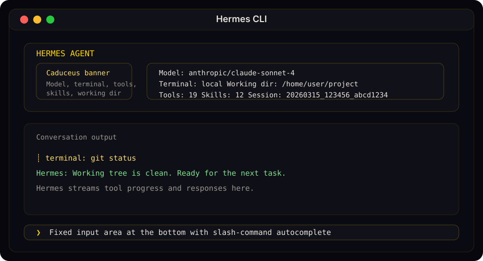

CLI 界面
Hermes Agent 的 CLI 是一个完整的终端用户界面（TUI），而非 Web UI。它支持多行编辑、斜杠命令自动补全、对话历史、中断并重定向，以及流式工具输出。专为常驻终端的用户而生。
提示
Hermes 还提供了一个现代 TUI，支持模态覆盖层、鼠标选择和非阻塞输入。使用 hermes --tui 启动——参见 TUI 指南。
运行 CLI
# 启动交互式会话（默认）
hermes
# 单次查询模式（非交互式）
hermes chat -q "Hello"
# 使用指定模型
hermes chat --model "anthropic/claude-sonnet-4"
# 使用指定提供商
hermes chat --provider nous # 使用 Nous Portal
hermes chat --provider openrouter # 强制使用 OpenRouter
# 使用指定工具集
hermes chat --toolsets "web,terminal,skills"
# 启动时预加载一个或多个 skill
hermes -s hermes-agent-dev,github-auth
hermes chat -s github-pr-workflow -q "open a draft PR"
# 恢复之前的会话
hermes --continue # 恢复最近的 CLI 会话（-c）
hermes --resume <session_id> # 通过 ID 恢复指定会话（-r）
# 详细模式（调试输出）
hermes chat --verbose
# 隔离的 git worktree（用于并行运行多个 agent）
hermes -w # 在 worktree 中以交互模式运行
hermes -w -z "Fix issue #123" # 在 worktree 中以单次查询模式运行
界面布局

Hermes CLI 横幅、对话流和固定输入提示符，以稳定的文档图示形式呈现，而非脆弱的文字艺术。
欢迎横幅一目了然地显示当前模型、终端后端、工作目录、可用工具和已安装的 skill。
状态栏
一个持久状态栏位于输入区域上方，实时更新：
☤ claude-sonnet-4-20250514 │ 12.4K/200K │ [██████░░░░] 6% │ $0.06 │ 15m
| 元素 | 描述 |
|---|---|
| 模型名称 | 当前模型（超过 26 个字符时截断） |
| Token 计数 | 已使用的上下文 token 数 / 最大上下文窗口 |
| 上下文进度条 | 带颜色阈值编码的可视填充指示器 |
| 费用 | 预估会话费用（未知或零价格模型显示 n/a） |
| 🗜️ N | 上下文压缩次数——当前运行会话被自动压缩的次数。首次压缩触发后显示。 |
| ▶ N | 活跃后台任务数——当前会话中仍在运行的 /bg prompt（提示词）数量。至少有一个任务进行中时显示。 |
| 时长 | 会话已用时间 |
| ⚠ YOLO | YOLO 模式警告——当 HERMES_YOLO_MODE 开启时显示（通过启动时的 hermes --yolo 或会话中的 /yolo 切换）。与横幅行警告保持同步，确保你不会忘记自己处于自动批准模式。 |
状态栏会根据终端宽度自适应——≥ 76 列时显示完整布局，52–75 列时显示紧凑布局，低于 52 列时显示最简布局（模型 + 时长，以及 YOLO 徽章（如已激活））。
上下文颜色编码：
| 颜色 | 阈值 | 含义 |
|---|---|---|
| 绿色 | < 50% | 空间充足 |
| 黄色 | 50–80% | 趋于饱满 |
| 橙色 | 80–95% | 接近上限 |
| 红色 | ≥ 95% | 即将溢出——考虑使用 /compress |
使用 /usage 查看详细分解，包括各类别费用（输入 vs 输出 token）。
会话恢复显示
恢复之前的会话时（hermes -c 或 hermes --resume <id>），横幅与输入提示符之间会出现一个"Previous Conversation"面板，显示对话历史的简洁摘要。详情及配置说明参见会话——恢复时的对话摘要。
快捷键
| 按键 | 操作 |
|---|---|
Enter |
发送消息 |
Alt+Enter、Ctrl+J 或 Shift+Enter |
换行（多行输入）。Shift+Enter 需要终端能够将其与 Enter 区分——见下文。在 Windows Terminal 中，Alt+Enter 被终端捕获（切换全屏）；请改用 Ctrl+Enter 或 Ctrl+J。 |
Alt+V |
在终端支持时从剪贴板粘贴图片 |
Ctrl+V |
粘贴文本，并尝试附加剪贴板中的图片 |
Ctrl+B |
语音模式启用时开始/停止录音（voice.record_key，默认：ctrl+b） |
Ctrl+G |
在 $EDITOR（vim/nvim/nano/VS Code 等）中打开当前输入缓冲区。保存并退出后，编辑后的文本将作为下一条 prompt 发送——适合编写长篇多段落 prompt。 |
Ctrl+X Ctrl+E |
外部编辑器的 Emacs 风格备用绑定（与 Ctrl+G 行为相同）。 |
Ctrl+C |
中断 agent（2 秒内双击强制退出） |
F6 |
打开全屏实时子智能体监视器，保留输入草稿。方向键选择，Enter 查看近期日志，s 引导，x 请求停止并确认。 |
F7 |
将实时子智能体栏切换为单行摘要或恢复多行预览，不改变输入焦点。 |
Ctrl+D |
退出 |
Ctrl+Z |
将 Hermes 挂起到后台（仅 Unix）。在 shell 中运行 fg 恢复。 |
Tab |
接受自动建议（ghost text）或自动补全斜杠命令 |
多行粘贴预览。 粘贴多行内容时，CLI 会显示一行简洁的单行预览（[pasted: 47 lines, 1,842 chars — press Enter to send]），而非将全部内容倾倒到滚动缓冲区。实际发送的仍是完整内容；这只是显示上的优化。
最终响应中的 Markdown 剥离。 CLI 会从 agent 的最终回复中剥离最冗长的 Markdown 围栏以及 **粗体** / *斜体* 包装，使其在终端中呈现为可读的纯文本，而非原始源码。代码块和列表会被保留。这不影响 gateway 平台或工具结果——它们保留 Markdown 以供原生渲染。
斜杠命令
输入 / 查看自动补全下拉菜单。Hermes 支持大量 CLI 斜杠命令、动态 skill 命令和用户自定义快捷命令。
常用示例：
| 命令 | 描述 |
|---|---|
/help |
显示命令帮助 |
/model |
显示或更改当前模型 |
/tools |
列出当前可用工具 |
/skills browse |
浏览 skill 中心和官方可选 skill |
/bg <prompt> |
在独立后台会话中运行一个 prompt |
/btw <question> |
在不打断当前对话的情况下，就当前对话提出顺带问题 |
/skin |
显示或切换当前 CLI 皮肤 |
/voice on |
启用 CLI 语音模式（按 Ctrl+B 录音） |
/voice tts |
切换 Hermes 回复的语音播放 |
/reasoning high |
提高推理强度 |
/title My Session |
为当前会话命名 |
/status |
显示会话信息——模型/配置/token/时长——以及本地会话摘要块（近期轮次数、常用工具、涉及文件、最新用户 prompt + 助手回复）。纯本地计算，不调用 LLM。 |
/sessions |
在经典 CLI 中直接打开交互式会话选择器（与 TUI 使用同一界面）。输入过滤，方向键导航，Enter 恢复。 |
完整的内置 CLI 和消息列表，参见斜杠命令参考。
语音模式的设置、提供商、静音调节以及消息/Discord 语音用法，参见语音模式。
提示
命令不区分大小写——/HELP 与 /help 效果相同。已安装的 skill 也会自动成为斜杠命令。
快捷命令
你可以定义自定义命令，无需调用 LLM 即可立即执行 shell 命令。这些命令在 CLI 和消息平台（Telegram、Discord 等）中均可使用。
# ~/.hermes/config.yaml
quick_commands:
status:
type: exec
command: systemctl status hermes-agent
gpu:
type: exec
command: nvidia-smi --query-gpu=utilization.gpu,memory.used --format=csv,noheader
restart:
type: alias
target: /gateway restart
然后在任意聊天中输入 /status、/gpu 或 /restart。更多示例参见配置指南。
启动时预加载 Skill
如果你已知道本次会话需要哪些 skill，可在启动时传入：
hermes -s hermes-agent-dev,github-auth
hermes chat -s github-pr-workflow -s github-auth
Hermes 会在第一轮对话前将每个指定的 skill 加载到会话 prompt 中。该标志在交互模式和单次查询模式下均有效。
Skill 斜杠命令
~/.hermes/skills/ 中每个已安装的 skill 都会自动注册为斜杠命令。skill 名称即为命令名：
/gif-search funny cats
/axolotl help me fine-tune Llama 3 on my dataset
/github-pr-workflow create a PR for the auth refactor
# 仅输入 skill 名称即可加载它，让 agent 询问你的需求：
/excalidraw
人格设定
设置预定义人格以改变 agent 的语气：
/personality pirate
/personality kawaii
/personality concise
内置人格包括：helpful、concise、technical、creative、teacher、kawaii、catgirl、pirate、shakespeare、surfer、noir、uwu、philosopher、hype。
你也可以在 ~/.hermes/config.yaml 中定义自定义人格：
personalities:
helpful: "You are a helpful, friendly AI assistant."
kawaii: "You are a kawaii assistant! Use cute expressions..."
pirate: "Arrr! Ye be talkin' to Captain Hermes..."
# 添加你自己的！
多行输入
有两种方式输入多行消息：
Alt+Enter、Ctrl+J或Shift+Enter— 插入新行- 反斜杠续行 — 在行尾加
\继续输入：
❯ Write a function that:\
1. Takes a list of numbers\
2. Returns the sum
说明
支持粘贴多行文本——使用上述任意换行键，或直接粘贴内容。
在使用 Kitty 键盘协议的终端中，数字小键盘上的 Alt+Enter 也会插入换行符，即使光标紧邻折叠的粘贴内容。带修饰键的小键盘导航键与对应的非小键盘按键行为一致。
Shift+Enter 兼容性
大多数终端默认对 Enter 和 Shift+Enter 发送相同的字节序列，因此应用程序无法区分它们。Hermes 仅在终端通过 Kitty 键盘协议或 xterm 的 modifyOtherKeys 模式发送不同序列时才能识别 Shift+Enter。
| 终端 | 状态 |
|---|---|
| Kitty、foot、WezTerm、Ghostty | 默认启用独立的 Shift+Enter |
| iTerm2（近期版本）、Alacritty、VS Code terminal、Warp | 在设置中启用 Kitty 协议后支持 |
| Windows Terminal Preview 1.25+ | 在设置中启用 Kitty 协议后支持 |
| macOS Terminal.app、Windows Terminal 稳定版 | 不支持——Shift+Enter 与 Enter 无法区分 |
当终端无法区分时，Alt+Enter 和 Ctrl+J 在所有终端中均可正常使用。特别是在 Windows Terminal 中，Alt+Enter 被终端捕获（切换全屏），永远不会传递给 Hermes——请直接使用 Ctrl+Enter（传递为 Ctrl+J）或 Ctrl+J 来换行。
中断 Agent
你可以在任意时刻中断 agent：
- 输入新消息 + Enter，在 agent 工作时——中断并处理你的新指令
Ctrl+C——中断当前操作（2 秒内双击强制退出）- 正在进行的终端命令会立即被终止（SIGTERM，1 秒后 SIGKILL）
- 中断期间输入的多条消息会合并为一条 prompt
繁忙输入模式
display.busy_input_mode 配置项控制在 agent 工作时按下 Enter 的行为：
| 模式 | 行为 |
|---|---|
"interrupt"（默认） |
你的消息中断当前操作并立即处理 |
"queue" |
你的消息被静默排队，在 agent 完成后作为下一轮发送 |
"steer" |
你的消息通过 /steer 注入当前运行，在下一次工具调用后到达 agent——不中断，不开启新轮次 |
# ~/.hermes/config.yaml
display:
busy_input_mode: "steer" # 或 "queue" 或 "interrupt"（默认）
"queue" 模式适合在不意外取消进行中工作的情况下准备后续消息。"steer" 模式适合在不中断的情况下在任务执行中途重定向 agent——例如在它还在编辑代码时说"顺便也检查一下测试"。未知值会回退到 "interrupt"。
"steer" 有两个自动回退：如果 agent 尚未启动，或附有图片，消息会回退到 "queue" 行为，确保内容不丢失。
你也可以在 CLI 中动态更改：
/busy queue
/busy steer
/busy interrupt
/busy status
首次提示
第一次在 Hermes 工作时按下 Enter，Hermes 会打印一行提示，说明 /busy 选项（"(tip) Your message interrupted the current run…"）。每次安装只触发一次——config.yaml 中 onboarding.seen.busy_input_prompt 下的标志会锁定它。删除该键可再次看到提示。
挂起到后台
在 Unix 系统上，按 Ctrl+Z 将 Hermes 挂起到后台——与任何终端进程一样。shell 会打印确认信息：
Hermes Agent has been suspended. Run `fg` to bring Hermes Agent back.
在 shell 中输入 fg 即可从中断处恢复会话。Windows 不支持此功能。
工具进度显示
CLI 在 agent 工作时显示动态反馈：
思考动画（API 调用期间）：
◜ (｡•́︿•̀｡) pondering... (1.2s)
◠ (⊙_⊙) contemplating... (2.4s)
✧٩(ˊᗜˋ*)و✧ got it! (3.1s)
工具执行信息流：
┊ 💻 terminal `ls -la` (0.3s)
┊ 🔍 web_search (1.2s)
┊ 📄 web_extract (2.1s)
使用 /verbose 循环切换显示模式：off → new → all → verbose。该命令也可为消息平台启用——参见配置。
工具预览长度
display.tool_preview_length 配置项控制工具调用预览行（如文件路径、终端命令）中显示的最大字符数。默认值为 0，表示无限制——显示完整路径和命令。
# ~/.hermes/config.yaml
display:
tool_preview_length: 80 # 将工具预览截断为 80 个字符（0 = 无限制）
这在终端较窄或工具参数包含很长文件路径时非常有用。
会话管理
恢复会话
退出 CLI 会话时，会打印恢复命令：
Resume this session with:
hermes --resume 20260225_143052_a1b2c3
Session: 20260225_143052_a1b2c3
Duration: 12m 34s
Messages: 28 (5 user, 18 tool calls)
恢复选项：
hermes --continue # 恢复最近的 CLI 会话
hermes -c # 简写形式
hermes -c "my project" # 恢复命名会话（谱系中最新的）
hermes --resume 20260225_143052_a1b2c3 # 通过 ID 恢复指定会话
hermes --resume "refactoring auth" # 通过标题恢复
hermes -r 20260225_143052_a1b2c3 # 简写形式
恢复会从 SQLite 中还原完整的对话历史。agent 能看到所有之前的消息、工具调用和响应——就像从未离开一样。
在聊天中使用 /title My Session Name 为当前会话命名，或从命令行使用 hermes sessions rename <id> <title>。使用 hermes sessions list 浏览历史会话。
会话存储
CLI 会话存储在 Hermes 的 SQLite 状态数据库 ~/.hermes/state.db 中。数据库保存：
- 会话元数据（ID、标题、时间戳、token 计数器）
- 消息历史
- 跨压缩/恢复会话的谱系
session_search使用的全文搜索索引
部分消息适配器还会在数据库旁保存各平台的转录文件，但 CLI 本身从 SQLite 会话存储中恢复。
上下文压缩
长对话在接近上下文限制时会自动摘要：
# 在 ~/.hermes/config.yaml 中
compression:
enabled: true
threshold: 0.50 # 默认在上下文限制的 50% 时压缩
# 摘要模型在 auxiliary 下配置：
auxiliary:
compression:
model: "" # 留空则使用主聊天模型（默认）。或指定一个廉价快速的模型，如 "google/gemini-3-flash-preview"。
压缩触发时，中间轮次会被摘要，同时始终保留前 3 轮和后 20 轮。
后台会话
在独立的后台会话中运行 prompt，同时继续使用 CLI 进行其他工作：
/bg Analyze the logs in /var/log and summarize any errors from today
Hermes 立即确认任务并将提示符还给你：
🔄 Background task #1 started: "Analyze the logs in /var/log and summarize..."
Task ID: bg_143022_a1b2c3
工作原理
每个 /bg prompt 会在守护线程中生成一个完全独立的 agent 会话：
- 隔离对话——后台 agent 不了解当前会话的历史。它只接收你提供的 prompt。
- 相同配置——后台 agent 继承当前会话的模型、提供商、工具集、推理设置和回退模型。
- 非阻塞——前台会话保持完全交互。你可以聊天、运行命令，甚至启动更多后台任务。
- 多任务——你可以同时运行多个后台任务。每个任务都有编号 ID。
结果
后台任务完成时，结果会以面板形式出现在终端中：
╭─ ☤ Hermes (background #1) ──────────────────────────────────╮
│ Found 3 errors in syslog from today: │
│ 1. OOM killer invoked at 03:22 — killed process nginx │
│ 2. Disk I/O error on /dev/sda1 at 07:15 │
│ 3. Failed SSH login attempts from 192.168.1.50 at 14:30 │
╰──────────────────────────────────────────────────────────────╯
如果任务失败，你会看到错误通知。如果配置中启用了 display.bell_on_complete，任务完成时终端会响铃。
使用场景
- 长时间研究——"/bg research the latest developments in quantum error correction"，同时继续编写代码
- 文件处理——"/bg analyze all Python files in this repo and list any security issues"，同时继续对话
- 并行调查——同时启动多个后台任务，从不同角度探索问题
说明
后台会话不会出现在主对话历史中。它们是独立会话，拥有各自的任务 ID（如 bg_143022_a1b2c3）。
静默模式
默认情况下，CLI 以静默模式运行，该模式会： - 抑制工具的详细日志 - 启用 kawaii 风格的动态反馈 - 保持输出简洁易读
如需调试输出：
hermes chat --verbose